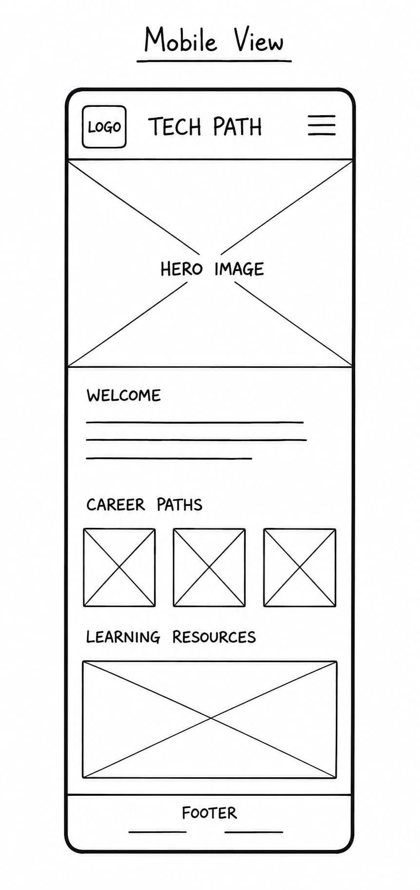
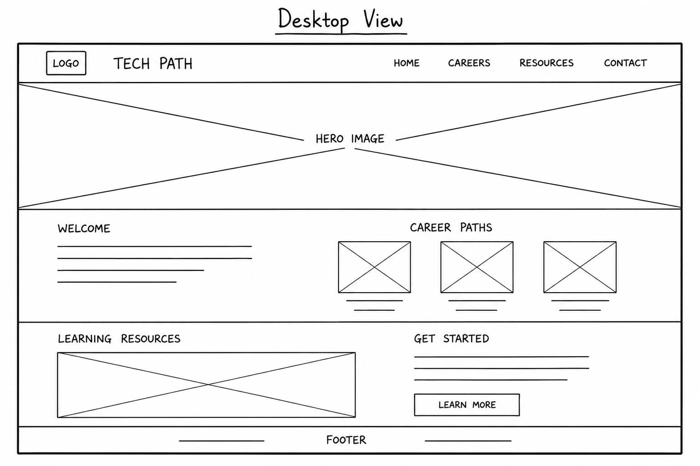

Site Name & Branding
Site Name: Tech Path: A Beginner's Guide to Technology Careers
Why this name? I chose this subject because I am interested in technology and software development. I also want to learn more about different tech careers while creating a website that can help other people who are interested in getting started in technology.
Optional Domain Availability: techpathguide.org
Logo Representation
Site Purpose
This website will provide information about different career paths in technology, such as software development, web development, cybersecurity, data science, UI/UX design, cloud computing, and computer engineering. It will explain what each career is about, the skills needed, and where beginners can start learning. Additionally, users can save favorite career paths to local storage and submit questions or resource recommendations via an interactive form.
Target Audience Scenarios
- Scenario 1: What core skills and tools do I need to start learning web development or cybersecurity as a complete beginner?
- Scenario 2: How can I filter different tech career paths based on my interests and save my top choices to review later?
Color Schema
This document demonstrates the selected color schema in action:
(Header, Footer, Headings)
(Subheadings, Borders, Links)
(Buttons, Highlights, CTAs)
(Body Text)
Typography
Heading Font: Montserrat (Sans-Serif) – Used for all major section titles, navigation elements, and emphasis.
Body Font: Open Sans (Sans-Serif) – Used for body copy, paragraphs, list items, and form fields for clear readability across screen sizes.
Wireframes
Layout sketches for the homepage across mobile and desktop views:
Mobile View Wireframe

Desktop View Wireframe
